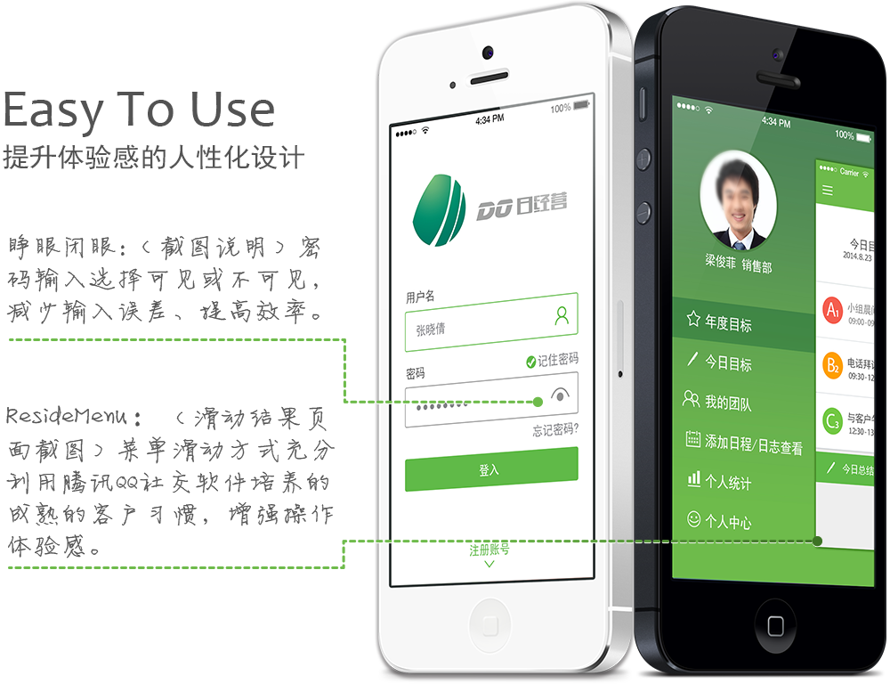

五项管理国际集团
五项管理国际集团注册于香港，是一家专门为企业提供“效率解决方案”的公司，专注于效率课程开发、效率工具研发、效率模式培训、效率执行辅导，以及企业效率托管等全程服务。
DO日经营系统
Question 客户问题
通过发放书面版效率日志，培训销售人员和管理人员填写，以此来检查自己和监督下属工作进度，遇到问题。
- 使用不便:
- 方式原始-手写,不便携，易遗漏，易丢失；
- 检查不及时:
- 不能实时跟踪个人进度，不能及时提供相关支持；
- 手动总结报表:
- 手工创建表格，误差率高，重复劳动，不便检查；
Solution 解决方案
利用移动终端软件（手机app）,全面实现现代化高效率
- 便捷使用:
- 随时随地随身，充分利用碎片时间，大幅度提升工作效率。实时填写，内容准确率高。上传云端，个人数据库分别保存；
- 随时检查:
- 实时远程监管，高效率协助处理；
- 自动生成报表:
- 自动生成图表，方便销售自查，领导监督；

卓年采用标准化服务体系

唯一对接人全程跟进，简化需求确认及修改流程，提高项目研发效率
从项目伊始，项目负责人全程跟进五项管理公司日常业务，深入客户公司与团队一起参加晨夕会；与客户公司销售总监、IT总监、财务总监深入沟通十数次，约谈数十名员工，详细了解原来使手工填表过程以及不方便处，深挖客户需求，想客户所想，行动在客户需求之前，为UE设计提供了第一手详细准确资料。
项目执行期间，精益求精，设计修改数十次挑选最终完美终稿